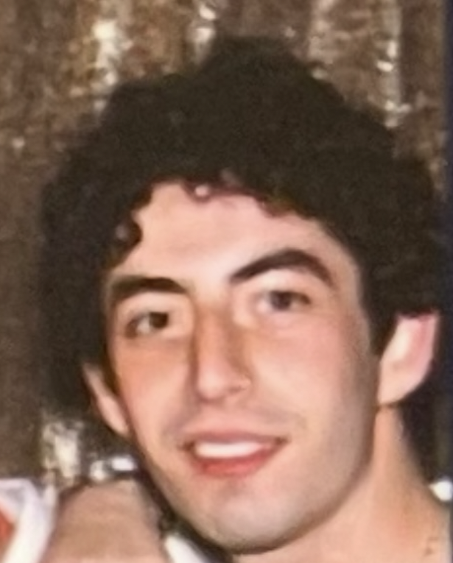

For the last twentyoneish years I've been bummin around this blessed, godforsaken Earth - which has been quite a fine and dandy thing - but oneday much sooner than I am apt to expect, I wont be bummin around any longer. So methinks to meself, all this crap I produce deserves a place to exist untethered from the body. So here it is for ya, all wrapped up on the world wide cybernetic interweb. Who am I, you ask? Well who're you? Anyhow, My name is Nathaniel Kenn Berg (Nate). I write, build wooden structures, draw extrodinarily poorly, play instruments, love and fail before the artistic muses, box like Frazier, drink cheap whiskey, and travel in search of feasts and jazzzzz music. Right now I attend Bowdoin College (but only barely). Forevermore, I walk the Earth like Cain, huntin for (mis)adventures and other such ventures. I hope we may drink each other's wine, in this life or another.